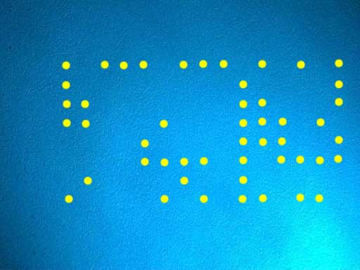
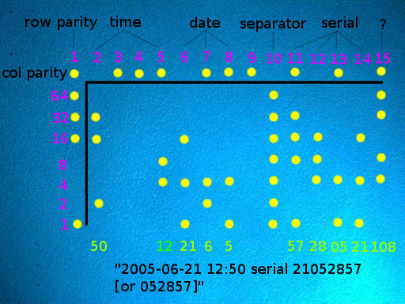

The DocuColor series prints a rectangular grid of 15 by 8 miniscule yellow dots on
every color page. The same grid is printed repeatedly over the entire page, but the
repetitions of the grid are offset slightly from one another so that each grid is
separated from the others. The grid is printed parallel to the edges of the page,
and the offset of the grid from the edges of the page seems to vary.
These dots encode up to 14 7-bit bytes of tracking information, plus row and
column parity for error correction. Typically, about four of these bytes were unused
(depending on printer model), giving 10 bytes of useful data. Below, we explain how
to extract serial number, date, and time from these dots. Following the explanation,
we implement the decoding process in an interactive computer
program.
Because of their limited contrast with the background, the forensic dots are not
usually visible to the naked eye under white light. They can be made visible by
magnification (using a magnifying glass or microscope), or by illuminating the page
with blue instead of white light. Pure blue light causes the yellow dots to appear
black. It can be helpful to use magnification together with illumination under
blue light, although most individuals with good vision will be able to see the dots
distinctly using either technique by itself.
This is an image of the dot grid produced by a Xerox DocuColor 12, magnified 10x
and photographed by a Digital
Blue QX5 computer microscope under white light. While
yellow dots are visible, they are very hard to see. We will need to
use a different technique in order to get a better view.
This is an image of a portion of the dot grid under 60x magnification. Now the
dots are easy to see, but their overall structure is hard to discern because the
microscope field only includes a few dots at a time.
This is an image of one repetition of the dot grid from the same Xerox DocuColor 12 page, magnified 10x and photographed by the QX5 microscope under illumination from a Photon blue LED flashlight. Note that the increased contrast under blue light allows us to see the entire dot pattern clearly.
The illumination is from the lower right; to the upper and lower left of the image, the corners of another repetition of the dot grid are visible.
Here, we use computer graphics software to overlay the black dots in the microscope image with larger yellow dots for greater visibility. (Because these computer-generated dots are significantly larger than the original dots, this image is no longer to scale and is now a schematic representation of the relative position of the dots.)
Finally, we add explanatory text to show the significance of the dots.
The topmost row and leftmost column are a parity row and column for error correction. They help verify that the forensic information has been read accurately (and, if a single dot has been read incorrectly, to identify the location of the error). The rows and columns all have odd parity: that is, every column contains an odd number of dots, and every row (except the topmost row) contains an odd number of dots. If any row or column appears to contain an even number of dots, it has been read incorrectly.
This guide is part of the Machine
Identification Code Technology project. It explains how to read the date, time,
and printer serial number from forensic tracking codes in a Xerox DocuColor color laser
printout. This information is the result of research by
Robert Lee, Seth Schoen, Patrick Murphy, Joel Alwen, and Andrew "bunnie" Huang. We
acknowledge the assistance of EFF supporters who have contributed sample printouts to give us
material to study.
Each column is read top-to-bottom as a single byte of seven bits (omitting the first parity bit); the bytes are then read right-to-left. The columns (which we have chosen to number from left to right) have the following meanings:
The printer serial number is a decimal number of six or eight digits; these digits are coded two at a time in columns 14, 13, 12, and 11 (or possibly just 13, 12, and 11); for instance, the serial number 00654321 would be coded with column values 00, 65, 43, and 21.